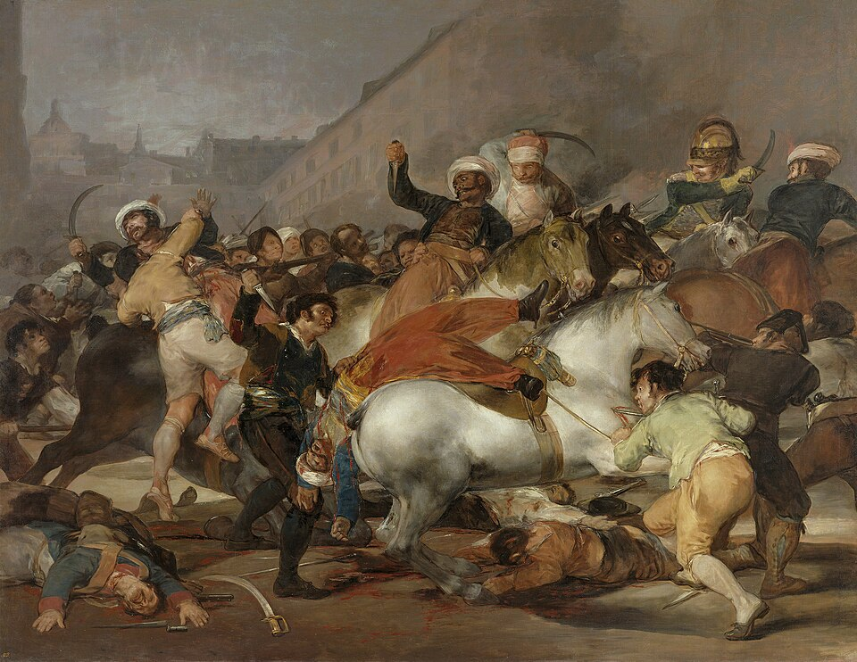

El pueblo de Madrid se alza contra las tropas de Napoleón
Madrid ha peleado hoy a cuchillo contra los soldados del emperador de los franceses. Hubo combates en la Puerta del Sol y en el parque de Monteleón, los muertos se cuentan por centenares, y esta misma noche se fusila a patriotas junto a la montaña del Príncipe Pío.

La jornada comenzó frente al Palacio Real. Corrió la voz de que los franceses querían llevarse a Bayona al infante don Francisco de Paula, último de la familia real que quedaba en Madrid, y el gentío se agolpó gritando que no se lo llevaban. Sonó un clamor —«¡que nos lo llevan!»— y la tropa del general Murat respondió con descargas de fusil y cañón sobre el paisanaje desarmado. Desde ese instante Madrid entero fue campo de batalla: campanas al vuelo, portales cerrados, y de cada calle salían hombres y mujeres con navajas, tijeras, estacas y las pocas escopetas que había en las casas.
En la Puerta del Sol se peleó como en una brecha. Contra el paisanaje cargaron los mamelucos y los dragones de la Guardia Imperial, sable en mano, y el vecindario los recibió desde el suelo y desde los balcones, a navajazos, a tiesto y a ladrillo. En el parque de artillería de Monteleón, los capitanes don Luis Daoíz y don Pedro Velarde abrieron las puertas al pueblo contra las órdenes recibidas, sacaron los cañones a la calle y sostuvieron el fuego durante horas contra fuerzas muy superiores. Ambos han muerto junto a sus piezas; el teniente Ruiz, que peleó con ellos, queda gravemente herido.
Esta jornada venía incubándose desde que los ejércitos del emperador entraron en España como aliados y se fueron quedando como dueños. El rey Fernando, aclamado hace poco más de un mes tras lo de Aranjuez, viajó a Bayona llamado por Napoleón, y allá marcharon también don Carlos, su padre, y la reina. Madrid quedó en manos del gran duque de Berg, Joaquín Murat, con miles de soldados acampados en la villa y su comarca. El pueblo, que veía salir una a una a las personas reales, ha entendido hoy que se quedaba sin rey y sin amparo, y ha respondido como responde Madrid.
Los muertos se cuentan por centenares y no hay casa sin un luto o un susto. Se ha visto pelear a las mujeres como soldados; entre las víctimas se cita a Manuela Malasaña, moza de quince años del barrio de las Maravillas. Los heridos se amontonan en hospitales y boticas, y las patrullas francesas recorren las calles recogiendo prisioneros. El general Murat ha publicado orden de que todo español tomado con armas sea pasado por las armas, y esta misma noche suenan las descargas de los fusilamientos en el Prado y junto a la montaña del Príncipe Pío, camino de la Moncloa.
Escribimos con la mano temblando, entre el toque de las campanas y el eco de las descargas. Madrid ha sido hoy vencido por el número, no por el ánimo, y la sangre de esta jornada no se seca con bandos ni proclamas. Corre ya el rumor de que en villas cercanas, y se nombra a Móstoles, los alcaldes preparan un llamamiento a los pueblos de España para que acudan con armas en socorro de la capital. No sabemos qué traerán los días; sabemos lo que ha hecho este: enseñar a los ejércitos del emperador que en España se puede entrar, pero no se puede mandar sin cuenta.